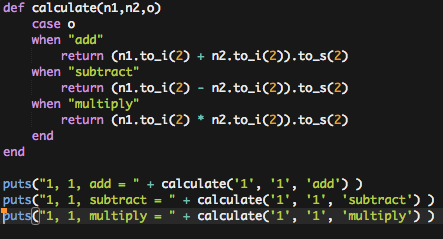
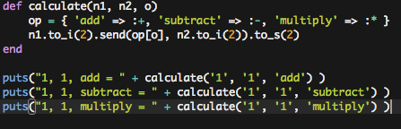

Without variables, programming computers to do anything would be very tedious. Variables make code flexible and re-useable, which is highly desirable. But sometimes we need to store a large amount of data, and the humble old variable just isn't going to cut it. For example, imagine trying to calculate a student's grade average using variables like this:
test_1 = 78
test_2 = 84
test_3 = 91
test_4 = 76
test_5 = 87
grade_avg = (test_1 + test_2 + test_3 + test_4 + test_5) / 5
Not only is that a lot of variables, but the code is inflexible. What if the teacher gives out six tests next time? You'd have to re-write the code just to deal with that. And in reality, as a programmer you are often dealing with much more than just five pieces of data. Think hundreds, thousands, and even millions. There's just no way to do that with any grace using the plain old variable.
Fortunately, there are some things that we can use. Let's take a look at an array first. Arrays are containers that can hold many distinct data values, called elements. How many? Well, the sky, or your computer's memory capacity, are the limits, but suffice it to say, you can store a lot of discreet data in an array. Arrays do this with indexes. Let's take a look at what an array in Ruby can look like:
my_array = [1, 2, 3, 4, 5]
That's a pretty basic array. So what is going on here? We have 5 integers stored in an array called my_array. Cool! In Ruby, we could have a mix of integers, floats, strings, or a number of other objects in that array. We can even mix and match - unlike some other languages which require all elements of an array be of the same data type, Ruby is flexible. You can even have an array that is full of arrays! But let's not get ahead of ourselves just yet.
We have an array, and we stored some values in it, but now how do we access those values? This is where it can be a little tricky. You access the various values in an array using an index. The starting index of an array is always zero. 100% of the time. Yes, it can seem a little odd to think that the first element in an array is at index 0 rather than index 1, but you will get used to it over time and with practice. So, if we wanted to access that 3 that we stored in my_array we would do this:
my_array[2] #=> 3
Note: the funny little #=> is just a way of saying "All that stuff on left will give you this value on the right". You'll see this convention in Ruby API docs. Check out the documentation for Arrays in Ruby here.
As you can see, when we look at what's stored at index 2 of the array, we find the value 3. What do you think we would find at index 0? If you guessed 1, you're correct! But what happens if we look for something at index 7? There is no index 7, there's nothing there. Literally, not even zero. The value would be return to us as nil, which is a computer's special way of saying "absolutely nothing". Therefore, in general you want to be sure to stay within the bounds of your array because things can get funky fast, and maybe even crash your program.
As luck would have it, we have ways to stay "in bounds" with arrays. Suppose I were to give you an array and ask you to find out how big it is? Ruby, and most other languages, gives us a simple way to do this. To find the length of our array above, I could use my_array.length, which would return 5, because that's how many elements there are. But remember, the largest index value for my_array is 4, because the first element is stored at index 0.
So how can we use the power of arrays to help us do things? Remember how much code we had to write to store five test grades for a student with varibale? Take a look above if you need a refresher, then check this out:
my_array = [78, 84, 91, 76, 87]
grade_avg = (my_array.inject(0) {| sum, grade | sum + grade }/ my_array.length
We won't dig too deeply into what exactly is going here, but basically inject is iterating over each element (grade) in the array and adding it to the variable sum. That then returns the sum of all grades, which we then divide by the number of grades (elements) to get an average - as an integer, mind you. That's a lot less code! Not only is it easier to maintain, but it is extensible. Our current array has only five elements, but our code doesn't care if it is 1 or 1 million elements inside that array, it will still work just fine.
You might now be wondering how we could add or remove elements from an array. Ruby is very flexible and forgiving about this, so enjoy that. Java, C++, and other languages generally require you to declare an array's size when you create the array. But in Ruby it is very simple.
To add an element to an array:
my_array.push(element)
To remove a single element:
my_array.pop()
I should note that these methods "push" an element onto the end of the array, or "pop" an element off of the end of the array. If you wanted to insert something into a specific index in your array, you should use this:
my_array.insert(index, element)
With insert, the index you provide as an argument is the index at which your element will now appear. All of the elements from the insert point to the end of the array shift up one index.
Hashes
Arrays are truly great and powerful, but in order to access the elements we need to provide an index, and an index is just a number. That makes getting to data a little abstract, now doesn't it? What if we had a contact list like this:
John S. 555-555-7987
Ben P. 555-555-4513
Jules W. 555-555-2424
We could store the phone numbers in an array easily enough. But then we would need a way to relate the name with the phone number. You could do this in array form a little something like...
contact_list = [["John S.", "555-555-7987"],["Ben P.", "555-555-4513"],["Jules W.", "555-555-2424"]]
But that is tedious and would require conditional code to find the person you were looking for in the array in order to retrieve their phone number. There is a better way! Welcome to hashes. This is how we make that into a hash:
contact_list = ["John S." => "555-555-7987", "Ben P." => "555-555-4513", "Jules W.", "555-555-2424"]
Hashes are collections of key/values pairs. Above, the names are the keys and the phone numbers are the values. The drawback here is that each key MUST be unique, or you are going to run into errors or unexpeected results. You can think of hashes as being like mini-databases, if that helps. With our contact_list in a hash, I can find a phone number as simple as this:
contact_list["Ben P."] #=> "555-555-4513"
Hashes are powerful tools and great to use when you have a distince key/value relationship between data. However, you can harness their power to pull off some really neat tricks. Let's take a look at two last examples. Below you see the code for a simple binary calculator.
Two binary values are passed to the method calculate along with an operation. A simple case statement handles the logic and determines which operation to actually perform. But, if we use hashes, we can do the following:
What's going on here? Well, our hash keys relate to the name of the operation we would like the method to perform. Our values are what is a little special here. Instead of data, the value part of each key/value pair is actually referencing a function. (Remember that in Ruby, math operators are functions). So when it sees the key "add", it finds the method for addition, the + symbol. Of course, some of the magic here is in the "send", which is a little beyond the scope of what we are talking about. But, you could take that snippet of code and turn it into a full blown regular calculator quite easily. note:(I made it an image on purpose, just so that you would have to type it yourself if you want to try it out - doing is learning!)